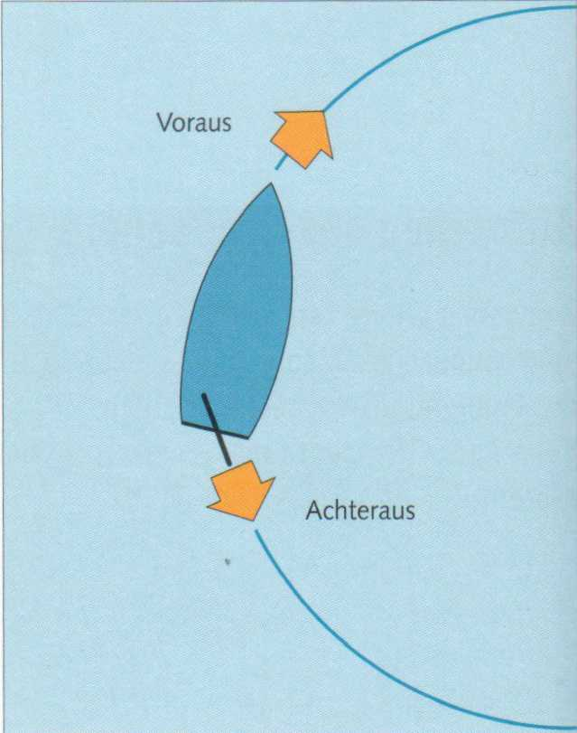
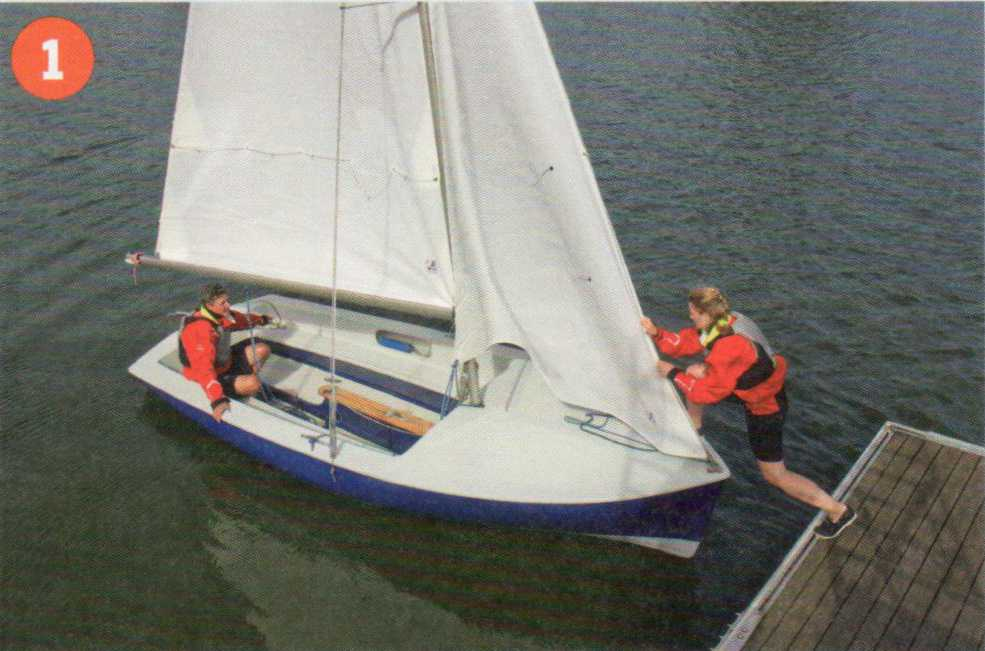
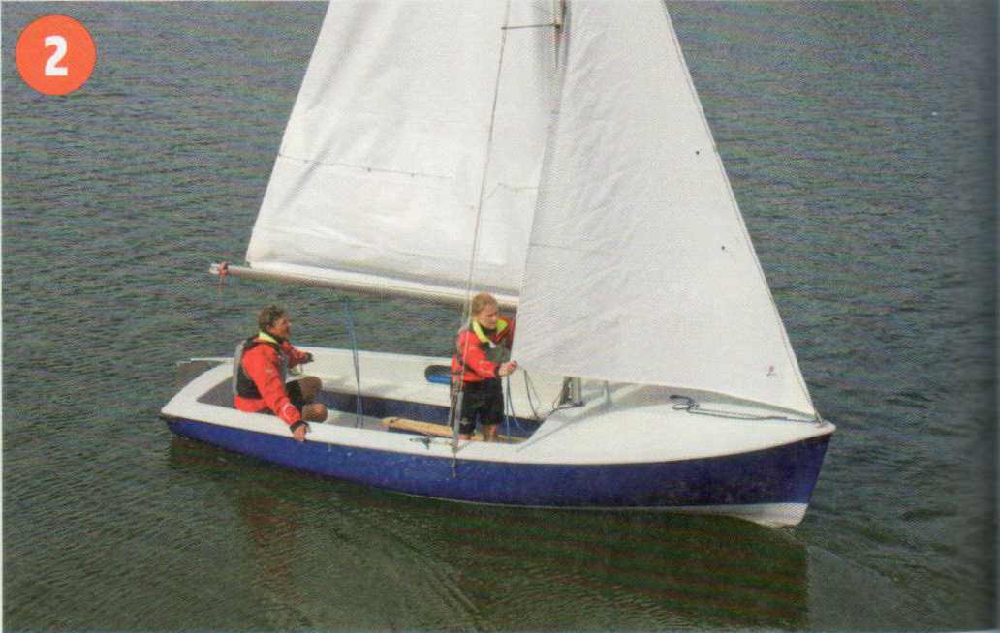
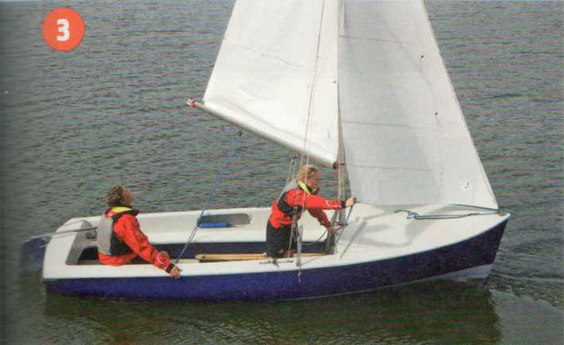
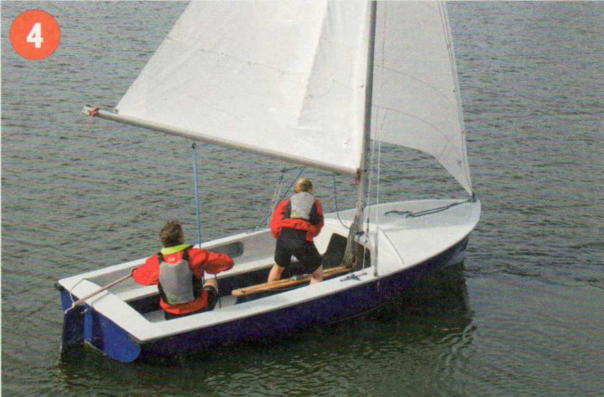
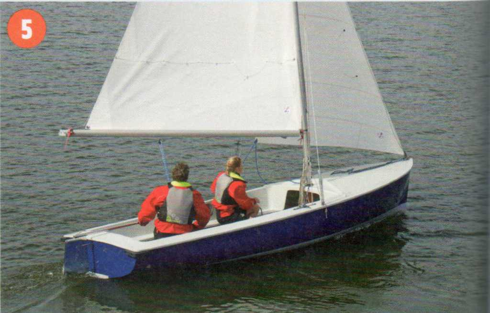
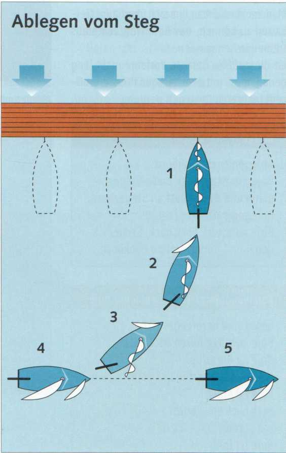
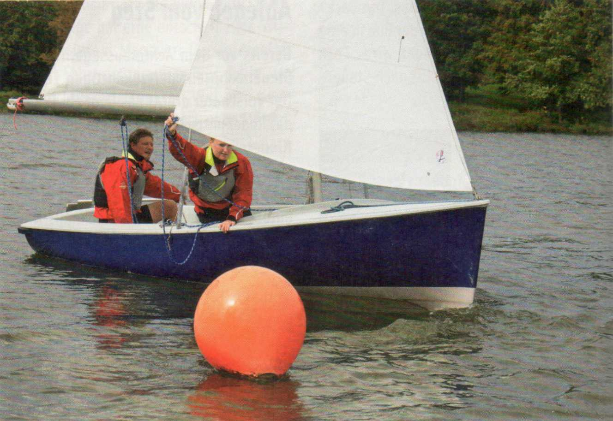
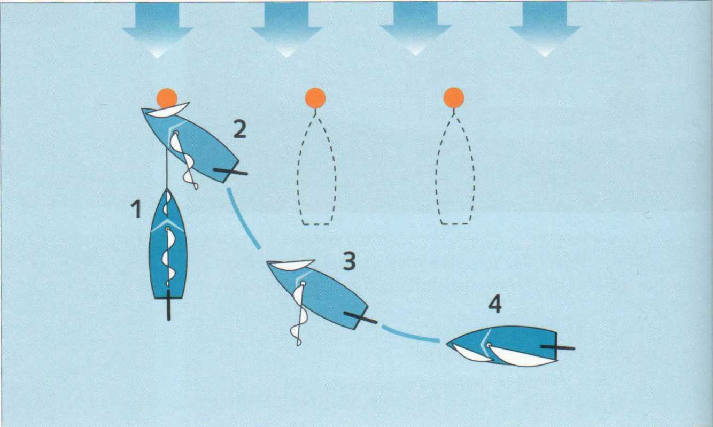

Da das Boot beim Segelsetzen im Wind stehen muss, beginnt das Ablegen aus dieser Position heraus. Nachbarboote, Pfähle oder Bojen erschweren häufig das Manöver. Deshalb schiebt der Vorschoter das Boot dosiert nach recht achteraus, also genau nach hinten. Der
Steuermann hält dazu die Pinne mittschiffs. Die Ruderlage hat eine entscheidende Wirkung bei diesem Manöver: Das Ruderblatt zeigt bei Fahrt achteraus immer dahin, wo das Boot hinfährt. Konkret: Will man beim Achteraussegeln mit dem Heck nach Steuerbord drehen, muss das Ruder(blatt) nach Steuerbord gelegt werden.
Segel backhalten: Das Halten eines Segels gegen den Wind, also nach Luv, nennt man backhalten. Hält man zum Beispiel das Großsegel gegen den Wind, wird das Boot gebremst oder es fährt achteraus. Das Backhalten der Fock bewirkt, dass der Bug in eine gewünschte Richtung gedreht wird. Fock back an Backbord: Boot treibt nach Steuerbord und umgekehrt.

1 Das Boot liegt im Wind. Die Vorschoterin löst die Vorleine und schiebt das Boot achteraus. Der Steuermann sitzt bereits auf der zukünftigen Luvseite.

2 Die Fock wird am Schothorn angefasst...

3 ... und weit backgehalten, der Steuermann unterstützt die Drehbewegung und legt das Ruder zur gleichen Seite.

4 Wenn die Rückfahrphase vorbei ist, wird die Fock übergeholt...

5 ..., und das Boot nimmt Fahrt auf in die gewünschte Richtung.
|
Merke |
|---|
| Beim Abliegen sind immer vier Dinge auf einer Seite: Steuermann, Ruderblatt, backgehaltene Fock und Steig. |
Bereits vor dem Achteraussegeln sitzt der Steuermann auf der zukünftigen Luvseite. Der Vorschoter drückt das Boot ab. Dabei ist das Ruder mittschiffs, also gerade. Wenn alle Hindernisse passiert sind, legt man Ruder, stellt die Fock back und wartet, bis das Boot in die gewünschte Richtung gedreht wird. Bei gutem Wind geht das sehr schnell! Nimmt das Boot Fahrt voraus auf, wird die Fock auf die Leeseite genommen und bauchig geführt,damit die Jolle schnell Fahrt aufnehmen kann. Der Steuermann hat die Pinne bereits mittschiffs genommen und konzentriert sich auf seinen neuen Kurs.

|
Kommandotafel Ablegen vom Steg |
|---|
|
Klar bei Vorleine! Vorleine ist klar! Vorleine los! Fock back an ...bord! Über die Fock! Schotenan ...bord! |
Häufig wird man mitten in einem Bojenfeld liegen und muss sich vorher genau überlegen, über welchen Bug man abfallen will, um sich von anderen Booten oder irgendwelchen Hindernissen freizuhalten. Damit der Bug beim Loswerfen nicht mit der Boje kollidiert, muss sie beim Ablegen über Backbord-Bug an Steuerbord kurzstag geholt werden, also jeweils auf der gegenüberliegenden Seite.
Die Bojenleine gleich loswerfen, wenn der Bug abzufallen beginnt, sonst könnte er vom Bojengeschirr wieder zurückgerissen werden. Manchmal wird man, um sich überhaupt freihalten zu können, das Boot weit achteraus treiben lassen müssen.
Ist die auf Slip belegte Vorleine nicht lang genug, muss mit dem backgehaltenen Großsegel achteraus gesegelt werden.

Ablegen mit backgehaltener Fock

|
Merke |
|---|
|
Ablegen nach Backbord: Boje kurzstag, Fock back, Steuermann und Ruderblatt an Steuerbord. Ablegen nach Steuerbord: |
| Kommandotafel Ablegen von der Boje |
|---|
|
Segel sind bereits gesetzt: Boje kurzstag holen an ...bord! Boje ist kurzstag! Klar zum Loswerfen der Boje! Boje ist klar! Fock back an ...bord! Los vorne! Boje ist los! Über die Fock! Schoten an ...bord! |